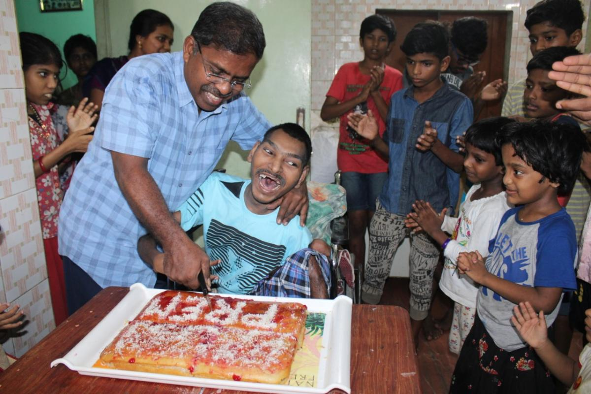

Founder & Managing Trustee
Mr. Selvyn Roy
A post graduate in Clinical Psychology with specialization in counseling and rehabilitation. Having served at MITHRA, Clark School for the Deaf & Dumb, and Prithipura Infant Home in Sri Lanka, Selvyn Roy saw the boundless potential in special children and founded Prema Vasam on June 2, 1999.